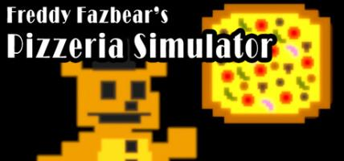

FNAF: Pizzeria Simulator


- Start your own Freddy Fazbear's Pizzeria with Freddy Fazbear Pizzeria Simulator!
- Presenting a fun Five Nights at Freddy's adventure with a lighter touch for the holidays, Freddy Fazbear's Pizzeria Simulator puts you in charge of developing your own restaurant! Design pizzas, feed kids, and get high scores!
- Presenting a fun Five Nights at Freddy's adventure with a lighter touch for the holidays, Freddy Fazbear's Pizzeria Simulator puts you in charge of developing your own restaurant! Design pizzas, feed kids, and get high scores!
Gameplay
- The game starts as an 8-bit style minigame. In this minigame, players control
Freddy Fazbear. The objective is to collect pizzas, and launch them toward
customers. Another Freddy sprite later appears, acting as an obstacle which blocks
the pizzas. The minigame then glitches, and takes the player to the next screen.
- After the glitch, the player finds themselves sitting at a desk with a cassette recorder and a sheet of paper. In front of them is a damaged version of Circus Baby. The man on the cassette tape then goes through multiple audio prompts with eerie noises to test the movements of the animatronic.
- The cassette recorder stops, and the damaged animatronic looks toward the screen.
- The player is then taken to the title screen.
- Upon starting the game, the objective requires the player to fill up their pizzeria with items from a catalog that reflect atmosphere, safety, entertainment, and bonus revenue. The player must also avoid items with a liability risk in order to prevent lawsuits, as described by Tutorial Unit.
- The player then enters a dark office with a computer in front of them and two vents to the left and right. The goal of this part of the game is to complete all the tasks listed on the computer.
- If the player salvaged an animatronic or if there is one loose, then the player must also attempt to prevent the animatronics from getting to the office.
- This is done by turning off the computer and fan, but this will also cause the temperature to rise. If the temperature in the office reaches 120° Fahrenheit, then the player will pass out. Turning on the computer and fan lowers the temperature, but causes noise, alerting the animatronics to the office.
- If the player accepts any sponsorship deals, advertisements can also appear, making more noise.
- If an animatronic is in an air vent, the player can shine their flashlight into the vent. There is also audio that the player can use to lure the animatronics away from the office. When finishing up the tasks, the player must log off their computer to complete the night.
- Between nights, the player will be presented with an animatronic that was found in an alley. The player will be given a choice on whether to salvage the animatronic, or put it back in the alley.
- Salvaging the animatronic will yield a revenue bonus. Throwing the animatronic back into the alley will yield no bonus, but the animatronic will not be loose in the pizzeria. When salvaging an animatronic, they must make sure that the animatronic does not come too close, or it will jumpscare them, and the bonus revenue will be lost. The player can use a taser to get the animatronic back to a stable position, but using it more than three times decreases the animatronic's salvage value.
- After the glitch, the player finds themselves sitting at a desk with a cassette recorder and a sheet of paper. In front of them is a damaged version of Circus Baby. The man on the cassette tape then goes through multiple audio prompts with eerie noises to test the movements of the animatronic.
- The cassette recorder stops, and the damaged animatronic looks toward the screen.
- The player is then taken to the title screen.
- Upon starting the game, the objective requires the player to fill up their pizzeria with items from a catalog that reflect atmosphere, safety, entertainment, and bonus revenue. The player must also avoid items with a liability risk in order to prevent lawsuits, as described by Tutorial Unit.
- The player then enters a dark office with a computer in front of them and two vents to the left and right. The goal of this part of the game is to complete all the tasks listed on the computer.
- If the player salvaged an animatronic or if there is one loose, then the player must also attempt to prevent the animatronics from getting to the office.
- This is done by turning off the computer and fan, but this will also cause the temperature to rise. If the temperature in the office reaches 120° Fahrenheit, then the player will pass out. Turning on the computer and fan lowers the temperature, but causes noise, alerting the animatronics to the office.
- If the player accepts any sponsorship deals, advertisements can also appear, making more noise.
- If an animatronic is in an air vent, the player can shine their flashlight into the vent. There is also audio that the player can use to lure the animatronics away from the office. When finishing up the tasks, the player must log off their computer to complete the night.
- Between nights, the player will be presented with an animatronic that was found in an alley. The player will be given a choice on whether to salvage the animatronic, or put it back in the alley.
- Salvaging the animatronic will yield a revenue bonus. Throwing the animatronic back into the alley will yield no bonus, but the animatronic will not be loose in the pizzeria. When salvaging an animatronic, they must make sure that the animatronic does not come too close, or it will jumpscare them, and the bonus revenue will be lost. The player can use a taser to get the animatronic back to a stable position, but using it more than three times decreases the animatronic's salvage value.
Audio
The main menu music.
Development
- Both of Scott Cawthon's known websites were turned to black for several months.
- Scott announced that he had stopped working on the game and began focusing on a new one. This was widely assumed to be a ruse, until Scott submitted a Reddit post that stated otherwise.
- A teaser image was added to fnafworld.com, while scottgames.com was teasing the second book. Scottgames.com later turned to an image of static just before the release of the book.
- Between August and November, there were three teasers of Freddy with a cake, Freddy close to three children, and Freddy juggling pizzas. This was speculated to be a pizzeria tycoon game, which was hinted back in June.
- The title of the game was confirmed via a teaser on scottgames.com. The game was released two days later
- On February 18, 2018, Scott announced an update to the game featuring Ultimate Custom Night, containing fifty animatronics. The update release was planned on August 8, 2018 (4th anniversary of series). However, on May 30, Scott revealed that UCN will be a standalone game, which was released on June 27, 2018.
- Scott announced that he had stopped working on the game and began focusing on a new one. This was widely assumed to be a ruse, until Scott submitted a Reddit post that stated otherwise.
- A teaser image was added to fnafworld.com, while scottgames.com was teasing the second book. Scottgames.com later turned to an image of static just before the release of the book.
- Between August and November, there were three teasers of Freddy with a cake, Freddy close to three children, and Freddy juggling pizzas. This was speculated to be a pizzeria tycoon game, which was hinted back in June.
- The title of the game was confirmed via a teaser on scottgames.com. The game was released two days later
- On February 18, 2018, Scott announced an update to the game featuring Ultimate Custom Night, containing fifty animatronics. The update release was planned on August 8, 2018 (4th anniversary of series). However, on May 30, Scott revealed that UCN will be a standalone game, which was released on June 27, 2018.
Reception
- The game currently received one mixed review from critics on Metacritic, and holds a positive
7.5 user score.